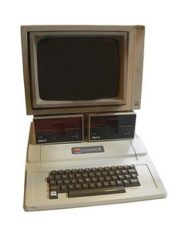

Steve Jobs
Steve Jobs apresentando durante a Apple Worldwide Developers Conference em 2010
Nome completo: Steven Paul Jobs
Nascimento: 24 de fevereiro de 1955 - São Francisco, Califórnia
Faleceu: 5 de outubro de 2011 (56 anos) - Palo Alto, Califórnia
Residênciava: Palo Alto, Califórnia
Nacionalidade: norte-americano
Fortuna: US$ 7 bilhões * (2011)
Cônjuge: Laurene Powell Jobs (1991–2011)
Filho(s): 4
Ocupação: Ex-presidente da Apple Inc.
Prêmios Medalha Nacional de Tecnologia e Inovação (1985)
Steven Paul Jobs (São Francisco, Califórnia, 24 de fevereiro de 1955 — Palo Alto, Califórnia, 5 de outubro de 2011) foi um inventor, empresário e magnata americano no setor da informática. Notabilizou-se como co-fundador, presidente e diretor executivo da Apple Inc. e por revolucionar seis indústrias: computadores pessoais, filmes de animação, música, telefones, tablets e publicações digitais. Além de sua ligação com a Apple, foi diretor executivo da empresa de animação por computação gráfica Pixar e acionista individual máximo da The Walt Disney Company. Morreu em 5 de outubro de 2011, aos 56 anos de idade, devido a um câncer pancreático.
No final da década de 70, Jobs, em parceria com Steve Wozniak e Mike Markkula, entre outros, desenvolveu e comercializou uma das primeiras linhas de computadores pessoais de sucesso, a série Apple II. No começo da década de 1980, ele estava entre os primeiros a perceber o potencial comercial da interface gráfica do usuário guiada pelo Mouse (informática), o que levou à criação do Macintosh.
Após perder uma disputa de poder com a mesa diretora em 1985, Jobs foi demitido da Apple e fundou a NeXT, uma companhia de desenvolvimento de plataformas direcionadas aos mercados de educação superior e administração. A compra da NeXT pela Apple em 1996 levou Jobs de volta à companhia que ele ajudara a fundar, sendo então seu CEO de 1997 a 2011, ano em que anunciou sua renúncia ao cargo, recomendando Tim Cook como sucessor.
Em 2015, houve o lançamento do filme biográfico Steve Jobs, onde conta parte da vida do co-fundador da Apple Inc., remetendo à lançamentos feitos no período entre 1984 e 1998 como o Apple Macintosh, NeXT Computer e o iMac G3. O filme teve sua estréia em 5 de setembro no Tellurid Film Festival. A atriz Kate Winslet ganhou o Globo de Ouro e o BAFTA como melhor atriz-coadjuvante por seu papel, além de ter sido nomeada também para o Oscar na mesma categoria. O ator Michael Fassbender também concorreu ao Oscar de Melhor Ator, por interpretar Jobs. O filme ganhou o Globo de Ouro de Melhor Roteiro, escrito por Aaron Sorkin.
Currículo de Steve Jobs "Estou procurando um lugar que necessite de muitas reformas e
consertos, mas que tenha fundações sólidas. Estou disposto a demolir
paredes, construir pontes e acender fogueiras. Tenho uma grande
experiência, um monte de energia, um pouco dessa coisa de ‘visão’ e não
tenho medo de começar do zero". |
Nascimento
Steven Paul Jobs nasceu em São Francisco, filho de Joanne Schieble Jandali Simpson, nascida em Wisconsin, e de Abdulfattah Jandali, membro de uma proeminente família síria proprietária de poços de petróleo, empresas e propriedades agrícolas. O casal se conheceu em meados dos anos 50 na Universidade de Wisconsin. Os pais de Joanne, alemães católicos, eram contra o relacionamento. Em 1954, o casal viajou escondido para a Síria. Jandali apresentou sua família a Joanne, que ficou hospedada na casa do namorado, mas a família dele não aceitou Joanne, que era americana, e eles queriam que o filho seguisse a tradição e se casasse com uma muçulmana. Ao voltarem para Wisconsin, Joanne se desesperou ao descobrir a gravidez. Comunicou o fato a Jandali, que ficara muito assustado, mas decidido a assumir o bebê, porém foram proibidos de se casarem: As duas famílias eram contra a união. Quando descobriram o bebê, a família de Joanne e a de Jandali, por ser contra o aborto, queriam que entregassem o bebê para a adoção, ou os dois perderiam a herança da família.. Sem alternativas e nem como se sustentar até arrumar um emprego, Jandali voltou para a Síria, abandonou os estudos e começou a trabalhar, prometendo juntar dinheiro para tentar ter como criar o filho. Joanne viajou para São Francisco sozinha, a mando dos pais, onde ficou num abrigo, sob proteção de um médico que cuidava de mães solteiras, fazia partos e cuidava de adoções sigilosas. Os meses se passaram e Jandali não mandava notícias. Por mais que quisesse ficar com o bebê, não poderia criá-lo sem um lar e sem um pai presente. Após dar a luz em um parto sofrido, Joanne não quis entregar o bebê, e resistiu muito até ser convencida pelo médico que era o melhor a fazer. Mesmo depressiva, pensava no futuro do bebê, e exigiu que seu filho fosse adotado por um casal com pós-graduação universitária, pois queria um futuro brilhante para ele. Inicialmente, o bebê seria adotado por um advogado e sua esposa que acabaram desistindo da adoção após o parto, pois queriam uma menina.
Após a recusa do primeiro casal, Joanne criou uma vaga esperança de ficar com o bebê, e ainda aguardava notícias de Jandali, mas as semanas se passaram e um novo casal procurou o abrigo. Sem ter como esperar, já que o seus pais foram buscá-la a força, o bebê foi deixado sob guarda de Paul Reinhold Jobs, mecânico e ex-membro da guarda costeira e Clara Hagopian Jobs, filha de imigrantes armênios. Inicialmente Joanne recusou-se a deixar o abrigo com seus pais, e a assinar os papéis da adoção, pois além de amar o filho, o casal não tinha completado o segundo grau e Joanne temia um futuro miserável ao filho. O impasse só terminou após Paul assinar um compromisso de criar um fundo para enviar o menino a faculdade e assim, a jovem foi embora com os pais, triste e infeliz, esperançosa de reencontrar Jandali. Após meses, Jandali procurou Joanne, mas a família dela impediu a aproximação. Joanne sai do país e vai estudar para um internato. Os anos se passam, e após estarem com suas carreiras consolidadas e independentes, se reencontram, e após um tempo de brigas e acusações, não resistem a antiga paixão, e mesmo sem aprovação das famílias, mesmo perdendo a herança, se casam no civil e na igreja. Os dois têm uma menina, Mona Simpson, e passam a investigar o destino do filho dado para adoção.
Juventude
Em 1955, o casal Jobs adota um menino recém nascido, a quem batizam de Steven Paul Jobs em um loteamento em Mountain View ao sul de Palo Alto. Em seu novo lar, Paul Jobs mergulha no passatempo de reformar e vender carros usados. As primeiras lições sobre design foram aprendidas durante o tempo que Steve passava na garagem com seu pai, que tentava, infrutiferamente, ensinar sobre os princípios da arte da mecânica automóvel. Dois anos depois, o casal adota uma menina recém-nascida, a quem batizam de Patty Jobs. Clara Jobs havia sido casada com um capitão do exército, que faleceu durante a guerra. Antes, porém, teve uma gravidez ectópica (fora do útero), sofrendo um aborto espontâneo e não podendo mais engravidar. Encontrou em Paul um marido carinhoso e compreensivo, que abdicou de ter filhos biológicos e junto da esposa, compartilhou seu sonho de adoção..
A atmosfera tecnológica adquirida por Palo Alto a partir dos anos 60 inspirou o jovem Steve a se aprofundar no campo da eletrônica, descoberta durante as horas passadas na garagem de casa.. Durante o nono ano do ensino fundamental, Jobs começa a visitar a garagem do engenheiro Larry Lang, que o introduz no Clube do Explorador da Hewlett-Packard, um grupo de estudantes que reuniam-se semanalmente no refeitório da empresa. Em pouco tempo, Jobs consegue um emprego na empresa e começa a se aprofundar em atividades culturais como literatura e música. Na eletrônica, passaram a frequentar as aulas dadas por John McCollum, durante o último ano do ensino médio. Nesse curso conhece Stephen "Steve" Wozniak, cujo irmão mais novo era colega de Jobs na equipe de natação. A amizade entre os dois Steves mostrou-se frutífera desde o início. Ambos eram apaixonados por eletrônica e por "pregar peças".
Um dos marcos do espírito "brincalhão" da dupla foi a criação de uma versão de um dispositivo que permitia a realização de chamadas de longa distância de graça, a partir da emissão de um som com frequência de 2600 hertz chamada de "Caixa Azul" ou Blue Box. O som com essa frequência servia como "chave de encaminhamento de chamada da rede telefónica". A dupla de amigos começou a vender o equipamento a 150 dólares. A ideia para a construção do equipamento surgiu de uma reportagem da revista Esquire intitulada “Segredos da pequena Caixa Azul”. “No meio dessa longa reportagem, tive de ligar para meu melhor amigo, Steve Jobs, e ler partes dela para ele”, lembrou Wozniak. A reportagem revelava que outros tons serviam como sinais de frequência única dentro da banda para encaminhar chamadas e que podiam ser encontrados numa edição da revista "Bell System Technical Journal". Numa tarde de domingo em setembro de 1971, Jobs e Wozniak invadiram a biblioteca do SLAC (Stanford Linear Accelerator Center) para obter a publicação. Inicialmente a Caixa Azul era usada apenas para diversão. É folclórica a história em que Wozniak, fingindo ser Henry Kissinger ligou para o Vaticano para tentar falar com o Papa João Paulo II. A brincadeira tornou-se negócio após Jobs perceber o potencial do equipamento. O preço de custo para cada unidade era de 40 dólares e o equipamento seria vendido a 150 dólares. Adotando apelidos como Berkeley Blue (Wozniak) e Oaf Tobark (Jobs) a dupla começou a vender os equipamentos. Nas demonstrações, ligavam para o hotel Ritz em Londres, ou para um serviço de piadas na Austrália. Os negócios com a Caixa Azul terminaram quando a dupla foi roubada por um cliente armado numa pizzaria. O empreendimento seria considerado por Jobs e Wozniak como um marco que permitiu a criação da Apple, pouco tempo depois. “Se não fosse pelas Caixas Azuis, não teria existido uma Apple. Tenho certeza absoluta disso. Woz e eu aprendemos a trabalhar juntos, e ganhamos a confiança de que podíamos resolver problemas técnicos e pôr efetivamente algo em produção.”, afirmou Jobs.
No verão de 1972, aos 17 anos, Steve sai de casa, contra a vontade dos pais, para morar numa cabana com sua primeira namorada, Chrisann Brennan. Nesse mesmo período começa a beber, fumar, frequentar espaços budistas de meditação e a tomar LSD, uma droga.. No final do mesmo ano ingressa na universidade Reed College em Portland, Oregon que frequentaria formalmente apenas por seis meses. "Desistir foi a melhor coisa que fiz. Pude me dedicar às coisas que eu realmente queria fazer." disse anos mais tarde. Jobs passa 18 meses frequentando o campus da Reed College, onde ganhou permissão para acompanhar as aulas como observador. Entre os cursos assistidos por Jobs estava um curso de caligrafia que anos mais tarde influenciaria na tipografia do Macintosh.
Em seu período acadêmico, Jobs começa a ler livros sobre espiritualidade e iluminação e se torna adepto de dietas compulsivas. Jobs andava descalço pela universidade, não tomava banho e devolvia garrafas de refrigerante para receber alguns trocados. Aos domingos realizava caminhadas até o centro Hare Krishna para ganhar uma refeição quente. Quando precisava de dinheiro, fazia pequenos reparos eletrónicos nos equipamentos do laboratório de Psicologia.
Em 1974 consegue um emprego na Atari. A empresa serviria de trampolim para que Jobs alcançasse a Europa e depois a Índia, onde faria uma jornada espiritual. No início de 1975 Jobs estava de volta a Palo Alto e ao seu emprego na Atari, onde seria responsável, junto com Wozniak, de uma versão de Pong para um jogador. Jobs ofereceu metade dos honorários a Wozniak, que na época trabalhava na Hewlett-Packard, se o projeto fosse concluído em quatro dias e com o mínimo de chips possível. A história é famosa porque Jobs pagou apenas a parte respeitante a metade dos honorários e nenhum valor referente ao bônus pago pela economia de cinco chips. Wozniak só descobriria isto dez anos depois.
Em 1978 nasce sua filha com Chrisann - uma menina chamada Lisa -, porém ele não assume a criança. O caso vai parar nos tribunais, pois Chrisann exige que ele assuma o bebê. Ele pede exame de DNA, já que o casal vivia entre indas e vindas. Na época, não moravam mais juntos e, nos útimos anos, ele vivera de casa em casa - de amigos ou namoradas. Após o teste dar positivo, Jobs ainda levou anos para assumir, de fato, a menina como sua filha. Teve diversas mulheres, não mantendo um relacionamento sério com nenhuma delas até que, no fim dos anos 1980, apaixonou-se de verdade e, em 1991, casou-se com Laurene, com quem teve três filhos.
Sobre o curso de Caligrafia "Aprendi sobre letras com serifas e sem serifas, sobre variar a
quantidade de espaço entre diferentes combinações de letras, sobre o que
torna uma tipografia excelente. Era lindo, histórico, artisticamente
sutil de uma maneira que a ciência não pode captar, e achei fantástico. - Steve Jobs |
Religião
Steve Jobs era Luterano, foi batizado na infância na Holy Trinity Lutheran Church CA , e frequentou o catecismo de sua igreja, no final de sua vida era simpatizante do Budismo, mas apesar disso continuava se inspirando em suas crenças cristãs. O colunista da About.com, Scott P. Richert, observa que Jobs foi batizado como cristão e confirmado no Sínodo da Igreja Luterana-Missouri em seu artigo de 6 de outubro, A visão cristã de Steve Jobs .
"O discurso de Steve Jobs em Stanford não é lido como um manifesto budista. Há algo sobre isso que, se não intencionalmente cristão, é pelo menos consonante com o melhor do ensino cristão. Eu gosto de pensar que, quando Jobs estava compondo isso, as lições de seu catecismo luterano continuavam borbulhando em sua mente ", escreveu Richert.
Carreira
A Apple Computer Inc foi criada em abril de 1976 para comercializar um computador pessoal criado por Wozniak poucos meses antes. A ideia para o equipamento surgiu durante uma reunião do Homebrew Computer Club
em 5 de março de 1975. Após ver um folheto sobre microprocessador,
Wozniak teve uma visão onde visualizou "um teclado, uma tela e um
computador, todos juntos num pacote integrado"[.
Após meses trabalhando no projeto, em 29 de junho de 1975 surgem os
primeiros caracteres na tela, em resposta ao digitar das teclas. "Digitei
algumas teclas no teclado e fiquei chocado! As letras apareceram na
tela. Foi a primeira vez na história que alguém digitou uma letra num
teclado e viu aparecer na tela de seu computador, bem na sua frente" afirmou Wozniak.
Fascinado pela funcionalidade do aparelho, Jobs convenceu Wozniak
a comercializar o equipamento. Para tanto, decidiram abrir uma empresa,
juntando um elemento mais velho e experiente chamado Ronald Wayne, colega de Wosniak na Atari. Entre as primeiras sugestões para nome estavam termos da computação como Matrix, neologismos como Executek e nomes "desinteressantes" como Personal Computer Inc. Por fim, Jobs propõe Apple Computers. "Eu
estava numa das minhas dietas frugívoras. Tinha acabado de voltar da
fazenda de maçãs. O nome parecia divertido, espirituoso e não
intimidante. Apple tirava a pressão da palavra computador. Além disso,
nos poria à frente da Atari na lista telefónica", explicou ao amigo Wozniak. A divisão de ações e lucros foi dividida em 45% para Jobs, 45% para Wozniak e 10% para Wayne.
Wayne algumas semanas depois venderia sua parte aos demais sócios por 800 doláres. Wayne foi o criador do primeiro logotipo da Apple e do manual do Apple I.
O primeiro grande lote, com 50 unidades Apple I foi vendido à
Byte Shop. Paul Terell, dono da loja de informática, ofereceu 500
dólares por computador se a Apple os entregasse totalmente montados.
Após levantar 25 mil dólares para o empreendimento, Jobs instalou a
equipe da Apple na garagem da sua casa, para começar a montar os
computadores.
O próximo projeto da Apple Inc se tornaria o computador pessoal mais
bem sucedido da história, vendendo quase 6 milhões de unidades em 16
anos.
Jobs e Wozniak planejavam um computador com "excelente invólucro,
teclado incorporado e ser integrado de ponta a ponta, da fonte de
alimentação ao software e ao monitor.". O projeto foi viabilizado graças a Mike Markkula que ofereceu uma linha de crédito de 250 mil dólares em troca de uma participação acionária.
Em 3 de abril de 1977 a nova empresa — Apple Computer Co. — foi
oficialmente criada e comprou a antiga sociedade que havia sido formada
por Jobs e Wozniak nove meses antes.
A fonte de alimentação do Apple II foi outra revolução. Jobs
queria evitar a necessidade de um ventilador e encomendou a construção
de uma nova fonte ao engenheiro Rod Holt
da Atari. Holt construiu uma fonte de energia comutável, que ligava e
desligava milhares de vezes o que possibilitava armazenar a energia por
muito menos tempo e consequentemente libertava menos calor. “Essa
fonte de alimentação comutável era tão revolucionária quanto a placa
lógica do Apple II. Rod não recebe muito crédito por isso nos livros de
história, mas deveria. Todos os computadores usam agora fontes de
alimentação comutáveis, e todos roubam o projeto de Rod”, explicou Jobs mais tarde.
Para o design, Jobs queria um trabalho que se destacasse diante
dos computadores em suas caixas cinza metálico. Ele queria um invólucro
elegante, feito de plástico moldado leve. O trabalho foi encomendado
originalmente a Ronald Wayne, mas coube ao consultor Jerry Manock produzir a versão final.
O Apple II foi lançado oficialmente em abril de 1977 durante a primeira Feira de Computadores da Costa Oeste em San Francisco. A Apple recebeu trezentas encomendas na exposição, e Jobs conheceu um fabricante de tecidos japonês, Mizushima Satoshi, que se tornou o primeiro revendedor da Apple no Japão.
Lançado em maio de 1980, o Apple III foi um fracasso. Randy Wigginton, um dos engenheiros, resumiu o problema: “O
Apple III era uma espécie de bebê concebido durante uma orgia; mais
tarde, todos estão com uma dor de cabeça terrível, e lá está aquele
filho bastardo, e todo mundo diz: não é meu”.
Os condicionalismos de hardware, sobreaquecimento por falta de
ventilação e outros defeitos levaram muitos compradores a seguir a
plataforma PC.
O Apple Lisa
foi concebido inicialmente como uma máquina de 2 mil dólares baseada em
um microprocessador de 16 bits, em vez dos 8 bits usados no Apple II. O
projeto nasceu em 1979. Foi o primeiro computador da Apple a utilizar a
interface gráfica, baseado na tecnologia do Xerox Alto.
Jobs inicialmente participou neste projeto mas saiu dele para criar o
projeto "Annie" que mais tarde seria rebatizado para Macintosh.
Embora fosse óbvio, levou anos até que Jobs admitisse que o
equipamento foi batizado com o nome de sua primeira filha, Lisa Nicole
Brennan-Jobs. Jobs renegou sua filha nos primeiros anos de vida. "Eu não queria ser pai”,
explicou certa vez. A relação de pai e filha só se tornou mais próxima
quando a menina completou 8 anos. Os engenheiros da Apple acabaram
criando o acrônimo de Local Integrated Software Architecture para explicar o nome.
Embora revolucionário - contava com um sistema de proteção de
memória aprimorado, sistema multitarefas, um sistema operacional baseado
em disco rígido, suporte para 2MB de memória RAM, slots de expansão,
além da interface gráfica e uso de rato/mouse - o Apple Lisa foi um
fracasso comercial. Custava 9.999 dólares no varejo. Parte do fracasso
comercial deveu-se a própria Apple e Jobs que converteram o Macintosh
num concorrente mais barato que o Lisa com agravante do Mac ser mais
rápido e totalmente incompatível com predecessor. O Lisa seria
descontinuado em 1989 após dois upgrades, o Apple Lisa 2 e o Macintosh XL (um Lisa 2/10 com emulador de Macintosh).
Segundo a biografia de Walter Isaacson, o Lisa inicialmente
estava sendo desenvolvido pela equipe de Jobs, mas por ordens da
diretoria da Apple ele fora afastado. Jobs estava interessado em
desenvolver um computador pessoal que pudesse chamá-lo de sua "criação".
Nesse caso empenhou-se no desenvolvimento de um computador que
revolucionou a indústria da informática, o Macintosh, que tornou-se um
sucesso em vendas e em elogios por parte de influentes veiculos de
comunicação da época. Tal foco no Macintosh trouxe prejuízos a fama do
Apple Lisa.
O projeto Annie nasceu em 1979, fruto do desejo do engenheiro Jef Raskin
de criar um equipamento simples, com tela, teclado e computador numa
única peça e vendido por mil dólares. Raskin imaginava o computador
pessoal como produto de massa, por isso trabalhava para reduzir os
custos. O projeto era formado inicialmente por apenas 4 engenheiros e
durante muito tempo esteve a ponto de ser abortado. Raskin considerava
machismo batizar computadores com nomes femininos, por isso trocou o
nome do projeto para "Macintosh", em homenagem a sua espécie de maçã
favorita, McIntosh. A grafia foi modificada para não gerar processos com
o fabricante de equipamentos de áudio McIntosh Laboratory.
Jobs começou a ficar fascinado pelas ideias de Raskin para o
projeto - uma máquina barata para o grande público, com uma interface
gráfica simples e design minimalista - mas não concordava com a
transgressão na qualidade para manter os custos baixos. Raskin e Jobs
começaram uma disputa pela liderança do projeto que terminou com o
afastamento de Raskin por ordem de Mike Scott,
presidente da Apple na época. Jobs começou a recrutar engenheiros entre
os funcionários da Apple e no começo de 1981 já contava com uma equipe
de 20 pessoas. A equipe foi transferida para uma casa de dois andares
perto da sede da Apple. Era vizinha de um posto da Texaco e passou a ser conhecida como Texaco Towers.
A equipe retornaria à sede em meados de 1983. Nesse meio tempo,
Jobs incitou uma rivalidade, nada saudável, entre as equipes do
Macintosh e do Apple Lisa. No auge da disputa, Steve Capps, engenheiro
do Macintosh hasteou uma bandeira pirata no recém construído prédio da
Apple, que permaneceu por algumas semanas até que membros do Apple Lisa a
sequestrassem. Após a ação, enviaram um bilhete a equipe do Macintosh
pedindo um resgate.
O Macintosh foi o primeiro produto da Apple a integrar a
filosofia de desenvolvimento "de uma ponta a outra". Para Jobs, os
melhores produtos eram os aparelhos completos com o software talhado
para o hardware, e vice-versa. De acordo com essa linha de pensamento,
há um sacrifício nas funcionalidades de um equipamento quando o sistema
operacional e os softwares são desenvolvidos de forma genérica, para
vários hardwares diferentes, havendo sempre o risco de
incompatibilidade. Essa filosofia seria reafirmada anos depois com o iMac, iPod, iPhone e iPad.
O primeiro anúncio do Macintosh foi exibido durante os comerciais do Super Bowl XVIII em 22 de janeiro. As três redes nacionais ABC, CBS e NBC além de cinquenta estações locais levaram ao ar notícias sobre o anúncio 1984, que se propagou numa velocidade sem precedentes. A peça de 1 minuto dirigida por Ridley Scott e produzida pela empresa de publicidade Chiat/Day na Inglaterra foi escolhida pela TV Guide e pela Advertising Age como o maior comercial de todos os tempos.
O lançamento oficial do Mac aconteceu em 24 de janeiro de 1984,
durante a reunião anual dos acionistas da Apple no auditório do Flint do
De Anza Community College.
Com capacidade para 2.600 lugares, o local estava lotado por
acionistas, jornalistas e fans da Apple. A apresentação teatral do
equipamento deixou o púbico surpreso e entusiasmado. Jobs tirou o Mac de
uma bolsa, conectou teclado e mouse e puxou uma disquete de 3½ do bolso
da camisa colocando-a na unidade de disquetes. Ao som de Carruagens de Fogo
o Mac apresenta em sua tela a palavra "MACINTOSH" inicialmente na
horizontal e depois descendo na vertical. Em seguida aparecem as
palavras "Insanamente grandioso" como se estivessem sendo
escritas de forma cursiva. A seguir são apresentadas imagens de captura
de tela de softwares do Mac como o QuickDraw.
Uma surpresa no final da apresentação causou ainda mais excitação
ao já impressionado público. O Macintosh foi o primeiro computador a se
apresentar. Com uma voz eletrônica ele se dirigiu ao público da
seguinte forma: “Olá. Sou o Macintosh. É ótimo sair daquela bolsa,
com certeza. Não estou acostumado a falar em público, mas quero
compartilhar com vocês uma máxima que me ocorreu quando conheci um IBM
de grande porte. Nunca confiem num computador que não consigam
levantar. Gosto de falar, claro. Mas agora quero sentar e ouvir. Assim, é
com muito orgulho que apresento um homem que tem sido como um pai para
mim, Steve Jobs". O final da apresentação gerou cinco minutos de aplausos contínuos descritos pelo jornalista Walter Isaacson como "um pandemônio, com gente na multidão aos saltos e socando o ar num frenesim."
O sucesso do Macintosh inicialmente contribuiu com o aumento da
influência de Jobs sobre a Apple. As divisões do Mac e do Lisa foram
unificados sob sua direção, mas o processo foi traumático para ambas as
equipes. Jobs mostrava-se cada vez mais impiedoso e extravagante. O
desgaste com as equipes acabaria por contribuir com sua saída no ano
seguinte.
No segundo semestre de 1984, as vendas do Mac começaram a
apresentar uma queda. A interface bonita e agradável não compensavam a
baixa potência, lentidão do equipamento, a ausência de disco rígido e
pouca memória RAM. Embora fosse um computador deslumbrante não havia
publicidade que conseguisse mascarar as suas limitações.
| Apple I de 1976 |  O Apple II de 1977 | Apple Lisa de 1983 |  Apple Macintosh 512KB. de 1984 |
Saída da Apple
O sucesso inicial das vendas do Macintosh reafirmaram a personalidade difícil e as excentricidades de Jobs. Inicialmente John Sculley, presidente da Apple, o apoiou entregando-lhe as unidades unificadas do Mac e do Lisa. As exigências extravagantes quanto a design e estética, cobranças cruéis a funcionários e parceiros acabaram desgastando sua imagem no conselho de direção da Apple. As quedas nas vendas do Mac a partir do segundo semestre de 1984 e vendas nulas do Lisa acabaram levando Jobs e Sculley a desentendimentos.
Em 24 de maio de 1985, numa reunião entre Jobs, Sculley e o corpo executivo da Apple, todos apoiaram firmemente Sculley. Com a restruturação planejada por Sculley, Jobs não ficaria com o controle de nenhuma divisão e nenhum encargo operacional, mas poderia ficar na empresa com o título de presidente do conselho e no papel de visionário dos produtos. Jobs não aceitou. Ele agora estava fora da Apple.
Após sua saída da Apple, Jobs mirou no mercado educacional criando a NeXT. Parte da equipe da nova empresa foi recrutada nas fileiras de engenheiros da Apple, o que gerou revolta em parte da diretoria da empresa. O imbróglio seria resolvido com um acordo extra-judicial no final de 1986. Na NeXT Jobs teve oportunidade de se entregar a seus melhores e piores instintos na área de gerenciamento, design e trabalho coletivo.
O computador NeXT foi considerado caro por conselheiros acadêmicos. No lançamento o equipamento era vendido por 6.500 dólares enquanto as instituições de ensino exigiam preços entre 2 mil e 3 mil. As vendas do computador, lançado em meados de 1989, ficaram em torno de 400 unidades mensais. Número muito abaixo das previsões e da capacidade da NeXT. O fracasso na comercialização dos seus produtos obrigou Jobs a fechar o setor de hardware da empresa. O sistema operacional do NeXT seria, entretanto, responsável pela maior reviravolta na vida de Jobs e da Apple. A Apple precisava com urgência de um novo Sistema Operacional e a opção encontrada foi adquirir a NeXT e levar Jobs junto. O anúncio da aquisição foi feito em 20 de dezembro de 1996.
Em 1996 a Apple, que estava desenvolvendo um novo sistema operacional, comprou a NeXT Computer, de Steve Jobs, para poder usar o NeXTStep como base para o seu novo sistema operacional. Com esta operação, Jobs retornou para a Apple em 1997 como consultor. A Apple estava entretanto numa situação financeira frágil e a ponto de fechar.
Apple foi salva a tempo com a venda de 40% das ações à rival Microsoft, e com uma ideia e um produto criativo significativo, introduzindo o iMac em 1998 com o novo sistema operacional, o Mac OS 9. Com o passar dos anos a Apple readquiriu as ações da Microsoft, o que evitou a sua falência.
O iMac foi o primeiro computador introduzido no mercado com várias características avançadas, principalmente pelo seu design inovador e pelo material utilizado, basicamente o plástico translúcido e colorido, o que decretou a morte da cor padrão para PCs (o bege), e a partir de então muitos deles passaram a usar este tipo de material nos produtos de informática em geral.
Depois do sucesso de vendas dos primeiros iMac, Jobs preparou uma nova revolução, a de refazer o famoso Mac OS, criando uma nova e poderosa plataforma que uniu o poder e a estabilidade do sistema Unix com a praticidade e elegância do tradicional Mac OS. Em 2000 foi lançado o Mac OS X.
O novo Mac OS X permitiu renovar e até aumentar as vendas dos produtos da Apple.
Uma das suas inovações foi ramificar a Apple para além do seu mercado restrito da informática, passando a atuar na área de eletrônica, telecomunicações (iPhone), músicas digitais (AAC e MP3), com a introdução em 2001 do tocador portátil de música iPod, integrado com a loja de venda legal de música pela Internet através do iTunes, um software dedicado para reprodução de áudio, vídeo, CDs e de rádios online. O iPod conquistou o público pela sua leveza, praticidade, modernidade e simplicidade.
Em 2007 a Apple passou a comercializar telefones moveis, chamados de iPhone, com tecnologia de toque (batizada de multi-touch por aceitar toques simultâneos); em 2008 lançou a versão de tecnologia 3G do aparelho, iPhone 3G; em julho de 2009 lançou o iPhone 3Gs (speed), com comando de voz e muito mais rápido que os modelos anteriores.
Em junho de 2010, a Apple lançou o iPhone 4. Uma das maiores novidades de então, muito aguardada pelos usuários das versões anteriores: foi a possibilidade do multitask (execução de vários programas simultaneamente), além da câmera com 5 MP com flash, entre outras mudanças. O iPhone 4 foi alvo de polêmicas, após alguns usuários (0,55%, de acordo com a própria fábrica) constatarem que, se tocado em determinado ponto (onde ficava a antena), o equipamento sofria queda de sinal. Poucas semanas depois, Steve Jobs apresentou-se publicamente em uma conferência, admitindo a existência do problema. Para contorná-lo, os usuários teriam duas opções: receber gratuitamente uma espécie de capa para evitar o toque na antena; ou então ir a qualquer loja da Apple para a devolução do dinheiro.
Steve Jobs fazia anualmente palestras emblemáticas (Keynotes), nas MacWorlds, quando lançava as suas tão esperadas ideias para a Apple (e o público ficava muito frustrado quando não havia novidades convincentes nestes eventos da Apple). Jobs e os seus parceiros apresentavam as novidades que a empresa lançaria em cada temporada. Muitas dessas novidades acabavam tornando-se tendência de mercado. No final de 2008, a Apple declarou que a MacWorld 2009 seria a última em que a empresa iria participar. Nesta edição do evento, Phil Schiller, vice-presidente de marketing de produtos da Apple na época, foi o palestrante oficial.
A rivalidade de Steve Jobs com Bill Gates, ex-presidente e principal acionista da Microsoft, já é elemento cultural do setor. Essa disputa pode ser verificada no filme produzido pelo canal de TV a cabo TNT, "Pirates of Silicon Valley" (Piratas do Vale do Silício, na versão em português), que aborda a biografia deles e das suas empresas, algumas vezes de forma exagerada. Podemos ver a disputa que existia entre eles e suas respectivas empresas muito antes de serem os ícones e "ídolos" que são hoje.
A relação de Steve Jobs com Bill Gates foi de certa forma balanceada em rivalidade e amizade, ambos firmaram acordos milionários como no caso em que pouco após Jobs retornar à Apple, acertou com a Microsoft para a criação de uma suíte do Microsoft Office para Mac. E quando a Apple após o lançamento do music player mais famoso do mundo, o iPod, disponibilizou seu avançado serviço de música, o iTunes, ao sistema operacional da Microsoft.
Na biografia autorizada de Jobs, Walter Isaacson relata um encontro entre Steve e Bill. Steve Jobs estava debilitado demais para levantar de sua cama, devido ao câncer que foi tratado de maneira tardia, quando recebeu a visita de Bill Gates. Ambos passaram um bom tempo conversando sobre suas famílias e suas vidas. A tal visita aconteceu pouco antes da morte do cofundador da Apple em 2011.
Em 1986, Jobs comprou da Lucasfilm um estúdio de computação gráfica, o Pixar Studios, por 10 milhões de dólares. Com uma parceria estratégica com a Disney criou, produziu e lançou vários filmes em animação 3D de sucesso, tais como o Toy Story, Procurando Nemo, Ratatouille, "Up, Altas Aventuras" e "Aviões". Com a compra dos estúdios Pixar pelo grupo de comunicação e entretenimento Walt Disney, Jobs tornou-se o maior acionista individual da Disney, onde deveria ocupar um posto no conselho diretivo, segundo uma nota divulgada pela Disney no dia da aquisição,em 2006.
No mundo corporativo, foi inegável a habilidade de Jobs de influenciar a plateia a comprar seus produtos. E além disso, em preparar apresentações de forma simples e objetiva. Antes de mais nada, Jobs fazia conforme recomendado pela maioria dos principais designers de apresentação: começava no papel.
De fato, foi inquestionável a presença dessa habilidade nas stevenotes, como eram conhecidas as keynotes de Jobs, transformando a exibição típica de slides, que é tediosa, mecânica e lenta em um evento teatral completo: com heróis e vilões, elenco de apoio e telas de fundo estonteantes. As keynotes de Jobs na MacWorld Expo 2007 e 2008 foram consideradas as melhores apresentações de todos os tempos. O lançamento do Macintosh é considerado uma das apresentações mais impressionantes da história do corporativismo nos Estados Unidos.
Jobs praticou o zen budismo, cujo princípio central é o conceito denominado kanso ou simplicidade. Uma apresentação de Jobs era muito simples, visual e sem marcadores. Pesquisas sobre o funcionamento cognitivo provam que os marcadores são a maneira menos eficaz de transmitir informações importantes. Nos slides de Jobs pôde-se perceber evidências de contenção, simplicidade e uso poderoso, mas sutil, do espaço vazio. Isso dá aos slides um espaço visual pra respirar. Espaço e branco significa elegância, qualidade e clareza.
De forma geral, as grandes apresentações possuem os nove elementos abaixo: Slogan, Declaração de amor, Três mensagens básicas, Metáforas e analogias, Demonstrações, Parceiros, Depoimento do cliente e aval de terceiros, Videoclipes, e Flip charts, suportes e show-and-tell. Em geral, Jobs elaborava um roteiro verbal para sua plateia, esquematizados em grupos de três: uma apresentação pode ser dividida em três atos; a descrição do produto em três recursos; e uma demonstração em três etapas. Para Jobs, a "regra de três" era um dos conceitos mais poderosos da teoria da comunicação.
O fundador da Apple estabeleceu a base de uma história convincente apresentando para sua plateia um antagonista, um inimigo e um problema que precisava de uma solução. Ao introduzir o antagonista (o problema), a plateia se agrupava em torno do herói (a solução). O apresentador tem que criar um espaço no cérebro da plateia para que este retenha a informação que ele esta prestes a transmitir. Se o apresentador oferecer uma solução sem definir o problema isso não vai acontecer. Dessa forma, deve ser criada uma resposta concisa para as perguntas: "O que você faz?", "Que problema você resolve?", "Qual é o seu diferencial?", "Por que devo me interessar?". De acordo com as pesquisas sobre o funcionamento cognitivo, a plateia começa a "morrer" depois de 10 minutos.
As demonstrações ajudam os apresentadores a criar uma conexão emocional com todo tipo de aprendiz da plateia: o visual, o auditivo e o cinestésico. Os aprendizes visuais correspondem a cerca de 40% da plateia, os quais aprendem por meio da visualização. Dessa forma, devem ser elaborados slides com poucas palavras e muitas imagens. Os aprendizes auditivos representam de 20% a 30% da plateia. Devem ser usadas técnicas verbais e retóricas, através de histórias pessoais ou exemplos eloquentes para apoiar as mensagens principais. Os aprendizes cinestésicos são aqueles que aprendem fazendo, movendo-se e tocando. Devem ser usados objetos, exercícios escritos, ou fazendo-os participar das demonstrações.
As palavras usadas em suas apresentações são importantes. Mas, além disso, também é importante a forma como ele as expressa, mantendo uma ligação com os slides. Jobs, quando estava no clímax, fazia três coisas que qualquer um pode e deve fazer para aprimorar as habilidades oratórias e de apresentação: ele estabelecia contato visual, mantinha uma postura aberta e fazia gestos frequentes com as mãos.
A pesquisa científica descobriu que o contato visual está associado à honestidade, confiança, sinceridade e segurança e a falta dele à falta de confiança e de capacidade de liderança. A quebra do contato visual é infalível para perder a conexão com sua plateia. Jobs sabia exatamente o que havia em cada slide e o que ia dizer no momento em que o slide apareceria.
Os sinais não verbais causam maior impacto em uma conversa. O tom de voz, por sua vez, é o segundo fator mais influente e as palavras realmente ditas são o terceiro e o menos importante. As pessoas julgam o apresentador o tempo todo, mas, principalmente, nos primeiros 90 segundos do encontro.
Jobs raramente cruzava os braços ou ficava atrás de um púlpito. Sua postura era aberta, não colocando nada entre si e sua plateia. Ao manter as mãos paradas, o apresentador se mostra rígido e formal. Jobs, por sua vez, enfatizava quase toda frase com um gesto que complementava suas palavras. Além disso, ele diversificava sua expressão verbal para criar suspense, entusiasmo e emoção utilizando quatro técnicas: inflexão, pausas, volume e ritmo.
De fato, Jobs mudou a vida de todo o mundo com seus produtos. Além disso, deixou também um legado sobre como fazer apresentações.
Em outubro de 2003, Jobs foi diagnosticado com câncer de pâncreas.
Em julho de 2004 ele foi submetido a uma cirurgia de duodenopancreatectomia, para retirada do tumor.
No dia 24 de agosto de 2011, Jobs renunciou à presidência da Apple. Ele esperava permanecer como presidente da mesa de direção da empresa, recomendando em sua carta de demissão que Tim Cook fosse nomeado seu sucessor.
Steve Jobs morreu no dia 5 de outubro de 2011 na sequência de um câncer pancreático raro que afeta as funções exócrinas do órgão, contra o qual lutava desde 2004. O anúncio foi dado pela família dele, que disse: "morreu em paz hoje". A causa final da morte foi uma parada respiratória. A empresa da qual ele foi fundador e CEO, a Apple Inc., divulgou um comunicado separadamente anunciando a morte de Steve Jobs:
Estamos profundamente tristes ao anunciar que Steve Jobs faleceu hoje.O brilho de Steve, sua paixão e força foram as fontes de inúmeras inovações que enriquecem e melhoram todas as nossas vidas. O mundo é incomensuravelmente melhor por causa de Steve.Os grandes amores da sua vida foram a sua esposa, Laurene e sua família. Nossos corações estão com eles e para todos que foram tocados por seus dons extraordinários.
We are deeply saddened to announce that Steve Jobs passed away today.Steve’s brilliance, passion and energy were the source of countless innovations that enrich and improve all of our lives. The world is immeasurably better because of Steve.His greatest love was for his wife, Laurene, and his family. Our hearts go out to them and to all who were touched by his extraordinary gifts.
— Apple
No mesmo dia, o site corporativo da Apple recebia os visitantes com uma página simples mostrando o nome de Steve Jobs, o seu ano de nascimento e morte e um dos seus retratos mais famosos. Ao ser clicada, a imagem conduzia a uma página com um obituário que dizia:A Apple perdeu um visionário e gênio criativo, e o mundo perdeu um ser humano incrível. Aqueles de nós que tiveram sorte o bastante para conhecer e trabalhar com Steve perderam um amigo querido e um mentor inspirador. Steve deixa para trás uma empresa que só ele poderia ter construído e seu espírito sempre será a base da Apple.
Apple has lost a visionary and creative genius, and the world has lost an amazing human being. Those of us who have been fortunate enough to know and work with Steve have lost a dear friend and an inspiring mentor. Steve leaves behind a company that only he could have built, and his spirit will forever be the foundation of Apple.
— Apple
Encontra-se sepultado em Alta Mesa Memorial Park, Palo Alto, Condado de Santa Clara, Califórnia nos Estados Unidos.
Em sua morte foi inevitável uma justa chuva de homenagens, que se espalhou pelos sites de notícias e tecnologia do mundo inteiro. Portais como Wired ou blogs como o Boing Boing mudaram completamente seus layouts, em homenagem póstuma ao fundador da Apple.
A Wired mudou completamente o seu layout e deixou o fundo todo preto, em destaque, além da imagem de Steve Jobs, frases de diversas personalidades influentes do mundo da tecnologia e da política mundial.
O famoso blog Boing Boing foi outro que fez uma mudança radical no seu layout, que ficou com o mesmo aspecto dos primeiros sistemas operacionais da Apple, todo em preto e branco.
O site brasileiro MacMagazine, especializado em cobrir todos os produtos e serviços que a Apple lança, mudou o fundo de sua home pela foto em preto e branco do Steve Jobs, e na logo, colocou uma “fitinha preta”, para representar o luto.
O blog noticioso The Huffington Post destacou a repercussão da morte de Steve Jobs na área mais nobre do site, com uma “nuvem de tags” com os principais fatos que cercam a morte do ex-CEO da Apple, e mais uma coleção de imagens da carreira dele.
Durante a madrugada da sua morte, fãs se reuniram em frente à loja da Apple, em Nova York. No local, diversos de veículos da imprensa americana se posicionaram para transmissões ao vivo. Lojas da Apple em diversas cidades do mundo também foram palco de homenagens.
Em um dos muros que circundam temporariamente a loja em Nova York, que passa por uma reforma, lia-se: “Eu amo Steve (I love Steve)”. Um pequeno memorial improvisado na escadaria, com mensagens, rosas, velas e muitas maçãs, símbolo da empresa, era fotografado por todos que chegavam, com câmeras, celulares e, claro, iPhones. Um bilhete dizia: “Obrigado por tudo Steve!! Vamos sentir saudades.”
À parte a importância de Jobs para o universo tecnológico – ele recebeu homenagens até do presidente americano, Barack Obama, jovens comentaram sobre o que os aparelhos da Apple mudaram na vida deles. “Jobs, com sua precisão nos detalhes, mudou meu comportamento, minha forma de ver o mundo. Hoje, presto muito mais atenção nos detalhes das coisas a minha volta”, ressaltou o ator Eric Lommel, de 26 anos.
Na China, dezenas de admiradores se reuniram nas lojas da marca em Pequim e Xangai para homenagear o cofundador da Apple. “É o melhor professor que tive nesta vida”, afirmava na porta de uma loja de Pequim o engenheiro de software Jie Bing, enquanto outros admiradores deixavam junto à entrada flores, mensagens de carinho e outras homenagens.
Não faltaram oferendas de maçãs, uma prática taoista muito habitual nas sepulturas chinesas, onde são deixados alimentos para os mortos, e que desta vez apareciam mordidas pelos fãs, para ficarem semelhantes com o inconfundível logotipo da empresa americana.
Nos cartões colocados no lugar podiam ser lidas frases como “adeus mestre” ou “voe para um novo caminho”.
Steve Jobs é possivelmente a pessoa mais comentada deste desde sua morte. E provavelmente uma das menos conhecidas e compreendidas: manipulador contumaz da própria imagem e mestre em mitificá-la (aproveitando-se inclusive de traços negativos de caráter que outros esconderiam do olhar público).
Após a morte de Steve Jobs 4,5 milhões de menções foram feitas no Twitter, saíram 65 mil publicações na internet, 290 mil curtidas no facebook, milhares de camisetas foram vendidas por 8 dólares. A morte dele foi anunciada em todos os jornais e programas de televisão do mundo. Ele foi apresentado como modelo de homem ousado, perfeccionista, criativo, inovador.Nota-se que sua fama espalhou-se por todo o mundo.
A contribuição de Steve Jobs para a popularização da informática pessoal supera a de qualquer outro líder dessa indústria - Bill Gates, Steve Wozniak ou Adam Osborne. O Apple II, de 1977, se transformou num padrão de computador pessoal e foi para uma geração inteira a porta de entrada nesse mundo digital. Empreendedor incomum, gênio da tecnologia e visionário, Jobs apostou na simplificação máxima da relação homem-máquina ou, na linguagem dos especialistas, na interface de usuário. Tudo, para ele, tinha de ser o fácil de usar, ou "user friendly".
Antes de qualquer concorrente, Steve Jobs conseguia identificar tendências e buscar caminhos em que poucos acreditavam - como a associação da informática pessoal com entretenimento e mobilidade. Nesse sentido, sua contribuição talvez seja maior para a eletrônica moderna do que foi a de Henry Ford, um século antes, para a indústria automobilística.
História do Steve Jobs